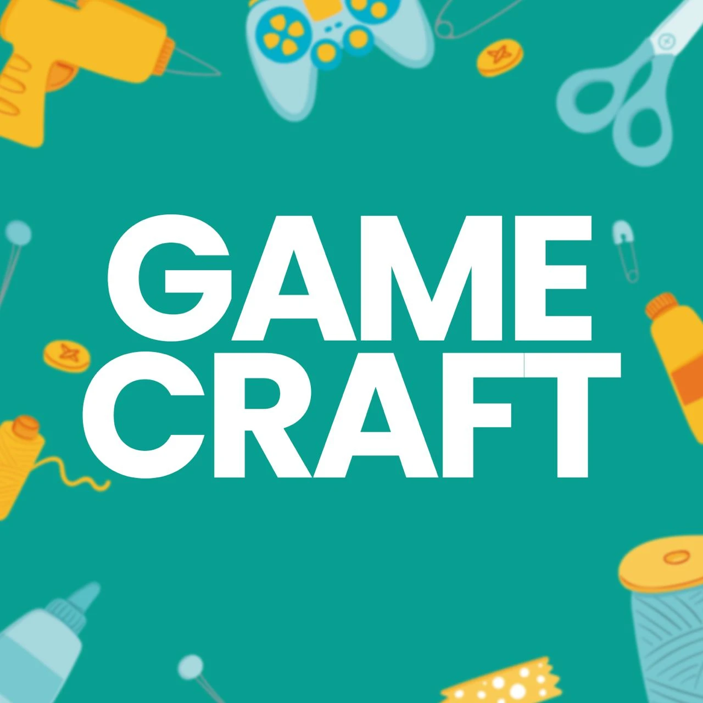
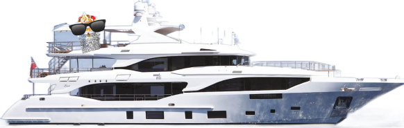

Gamecraft is een Nederlandse gamefabriekant die gratis games speelbaar maakt voor iedereen. Zij maken al meer dan 75 jaar spellen. Zij merken dat de (bord)spellenverkoop de laatste jaren wat terug loopt, en willen graag een online campagne starten om jongeren weer een beetje geïnteresseerd te krijgen in het spelen van eenvoudige (online) spellen.

